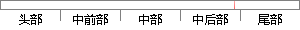

在本文完成之际，谨向给予我帮助、指导、关心和支持的老师、领导、同学和亲友致以诚挚的谢意。
片段位置图

相似结果|
相似片段 1：少。 56致 谢 三年的研究生学习生活就要结束了，在硕士学位论文即将完成之际，谨向指导、培养、关心和帮助我的老师、同学和朋友们致以最诚挚的感谢！ 首先，本文的研究工作是在导师关治洪教授的悉心
相似片段 2：值此论文完成之际，谨向曾经关心、帮助和支持我的老师、朋友和亲人致以最真诚的谢意。步骤22 感谢学术支持 100％ 100％ 感谢给予的智力支持 Nowordscan唧Ie野mygratitude盯I哪出
相似片段 3：的老师、领导、同学和亲人们致以诚挚的谢意!(M2．S1)第一个必须感谢的是导师{名字1)教授，本文的顺利完成离不开他的关心和帮助。(M2．S2)两年多的研究生学习和生活，一直是在王老师的悉心指导和热心
|
※ 片段修改建议 ※
近似词参考：- 给予：赐与
- 帮助：帮忙 扶助 辅助 接济 匡助 资助
- 指导：指点 引导 指示
- 关心：体贴 关切
- 支持：撑持 支撑
- 老师：教员 先生
- 领导：带领 辅导 向导
- 同学：同窗 同砚
- 亲友：亲朋
- 诚挚：真挚
系统自动生成语句：在本文完成之际，谨向赐与我帮忙、指点、体贴和撑持的教员、带领、同窗和亲朋致以真挚的谢意。
注：本片段修改建议为系统自动生成，仅供参考。